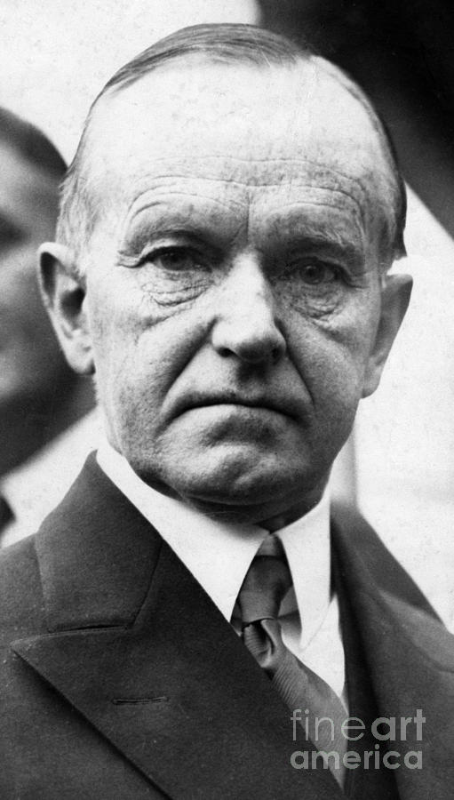

Don’t expect to build up the weak by pulling down the strong.
— Calvin Coolidge
- Looking Back -
He chose not to run for what would have been an assured second term.
Instead, he retired back Northampton, where he wrote a magazine,
newspaper column, and his autobiography. Less than four years after
retiring, though, he died of a heart attack. Almost immediately
after his death, the Great Depression began to set in.

Calvin Coolidge Older
- Legacy -
Calvin's Final Resting Place
Looking back, many people accuse Calvin Coolidge of complacency and
inaction, but others disagree, stating that his stolidity was a
breath of fresh air. He became the subject of many jokes, wth writer
Dorothy Parker exclaiming, "How can you tell?" upon hearing of his
death. Despite this, many fondly remembered him for his virtues and
dignity and for the resect that he broguht the presidency. Grace
Coolidge lived for another 24 years after Calvin's death, helping to
educate the deaf.